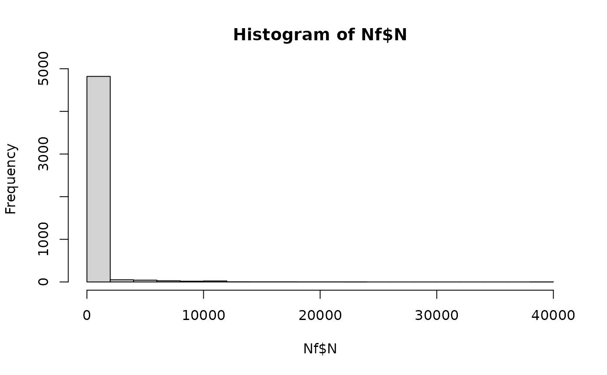

External cross-contamination of fish fillets during smearing with salt, sugar or spices
Source:R/sfSmearingCC.R
sfSmearingCC.RdThe function sfSmearingCC() simulates the potential external contamination of fish fillets during the process of
dry-salting when producing smoked salmon, or during smearing the fish fillets with salt, sugar and spices when producing
gravad or any macerated fish. The algorithm evaluates the cross-contamination event at fish fillet level (and not at lot level),
assuming that every fish fillet has the same probability pccSmearing of being contaminated when in contact
with contaminated environmental elements during the process of smearing with salt, sugar and/or spices.
Usage
sfSmearingCC(
data = list(),
pccSmearing,
trSmearingMean,
trSmearingSd,
nSurface
)Arguments
- data
a list of
N(
CFU) A matrix of sizenLotslots bysizeLotunits containing the numbers of L. monocytogenes on fish fillets;PMean prevalence of contaminated lots (scalar);
ProbUnitPosProbability of individual lots being contaminated (vector).
- pccSmearing
Probability that cross-contamination with L. monocytogenes occurs during dry salting, or smearing the fillets with sugar/spices, through tables or other surfaces (scalar).
- trSmearingMean
Mean parameter of the normal distribution representing the variability in the log 10 of the transfer coefficient of L. monocytogenes cells from surfaces to fish fillets (scalar or vector).
- trSmearingSd
Standard deviation parameter of the normal distribution representing the variability in the log 10 of the transfer coefficient of L. monocytogenes from surfaces to fish fillets (scalar or vector).
- nSurface
(
CFU) Numbers of L. monocytogenes cells on environmental elements in contact with fish fillets while dry salting (or while smearing the fillets with sugar/spices) (scalar or vector).
Value
A list of three elements:
N(
CFU) A matrix of sizenLotslots bysizeLotunits containing the numbers of L. monocytogenes in (dry-salted) fish;ProbUnitPosProbability of individual lots being contaminated after smearing with ingredients (vector);
PMean prevalence of contaminated lots after smearing with ingredients (scalar).
Note
The suggested parameters trSmearingMean=-0.29 and trSmearingSd=0.31 for the normal distribution about the
variability in the log 10 of the transfer coefficient of L. monocytogenes were taken from Hoelzer et al. (2012)
, to
represent cross-contamination from board to meat. The values of pccSmearing and nSurface must be defined by the
user and/or assessed in scenarios.
References
Hoelzer K, Pouillot R, Gallagher D, Silverman MB, Kause J, Dennis SB (2012). “Estimation of Listeria monocytogenes transfer coefficients and efficacy of bacterial removal through cleaning and sanitation.” International Journal of Food Microbiology, 157, 267-77. doi:10.1016/j.ijfoodmicro.2012.05.019 . Wolodzko T (2020). extraDistr: Additional Univariate and Multivariate Distributions. R package version 1.9.1, https://CRAN.R-project.org/package=extraDistr. Team RC (2022). R: A Language and Environment for Statistical Computing. R Foundation for Statistical Computing, Vienna, Austria. https://www.R-project.org/. FDA (2021). “FDA-iRISK 4.2 Food Safety Modeling Tool: Technical Document.” U.S. Food and Drug Administration.
Author
Ursula Gonzales-Barron ubarron@ipb.pt and Regis Pouillot rpouillot.work@gmail.com
Examples
dat <- Lot2LotGen(
nLots = 50,
sizeLot = 100,
unitSize = 500,
betaAlpha = 0.5112,
betaBeta = 9.959,
C0MeanLog = 1.023,
C0SdLog = 0.3267,
propVarInter = 0.7
)
Nf <- sfSmearingCC(
dat,
pccSmearing = 0.05,
trSmearingMean = -0.29,
trSmearingSd = 0.31,
nSurface = 200
)
str(Nf)
#> List of 10
#> $ Lot2LotGenParameters:List of 9
#> ..$ nLots : num 50
#> ..$ sizeLot : num 100
#> ..$ unitSize : num 500
#> ..$ betaAlpha : num 0.511
#> ..$ betaBeta : num 9.96
#> ..$ C0MeanLog : num 1.02
#> ..$ C0SdLog : num 0.327
#> ..$ propVarInter: num 0.7
#> ..$ Poisson : logi FALSE
#> $ lotMeans : num [1:50] 0.533 3.0908 0.4071 0.0666 0.4667 ...
#> $ unitsCounts : num [1:5000] 0 0.178 3.884 0 0 ...
#> $ N : num [1:50, 1:100] 0 89 1942 0 0 ...
#> $ ProbUnitPos : num [1:50] 1 1 1 1 1 1 1 1 1 1 ...
#> $ P : num 1
#> $ betaGen : num [1:50] 0.05886 0.10122 0.11377 0.00157 0.10745 ...
#> $ nLots : num 50
#> $ sizeLot : num 100
#> $ unitSize : num 500
#> - attr(*, "class")= chr "qraLm"
Nf$P
#> [1] 1
mean(Nf$ProbUnitPos)
#> [1] 1
hist(Nf$N)
